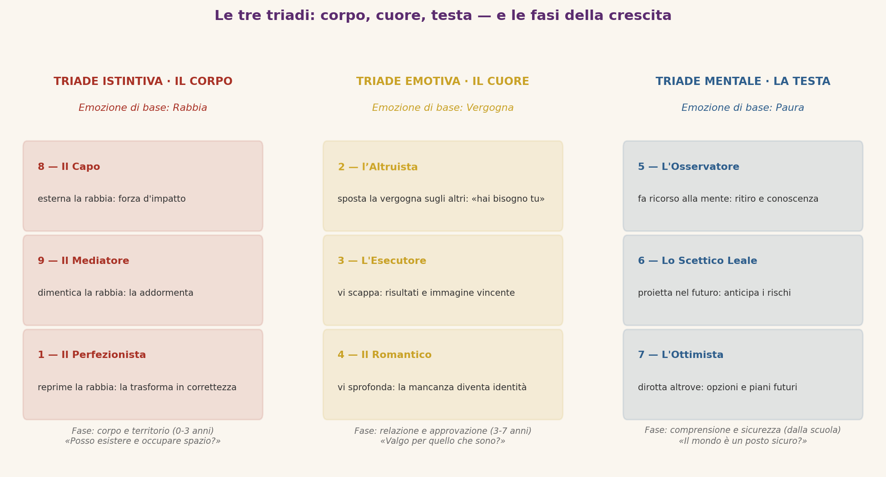

⬤ Tappa del percorso: il «chi sono io» — riconoscere il proprio tipo base. (Tappa 3 di 4)
Triadi e Tipi: tipo base e dinamiche interne
Non un quiz, ma uno specchio
Il primo passo è l’auto-osservazione onesta: riconoscere quale strategia domina — quale passione ti possiede quando sei sotto pressione, quale copione mentale ripeti, quale ferita continui a proteggere. I questionari possono aiutare, ma la verifica decisiva è la risonanza interiore: leggere un tipo e riconoscervisi «con un filo di imbarazzo» è generalmente il segno più affidabile.
Un baricentro, molte dinamiche
Il tipo base non è tutta la persona. Le altre otto posizioni del simbolo restano attive e interagiscono con il tipo dominante secondo dinamiche precise:
- Le ali: i due punti adiacenti al tuo tipo colorano il modo in cui lo vivi (un Tipo 9 «con ala 8» sarà più deciso di uno «con ala 1»).
- Il punto di stress: sotto pressione il tipo «scivola» verso un altro punto e ne assume le rigidità peggiori.
- Il punto di integrazione: nella crescita, il tipo «sale» verso un altro punto e ne assume le risorse migliori.
- I centri di intelligenza: i nove tipi si raggruppano in tre triadi — istintiva (8, 9, 1), emotiva (2, 3, 4), mentale (5, 6, 7) — ciascuna con una modalità dominante di percepire il mondo.
Le tre triadi nei dettaglio
Ogni triade raggruppa tre tipi che condividono lo stesso centro dominante — corpo, cuore o testa — e quindi la stessa emozione fondamentale. Ciascun tipo, però, gestisce quell’emozione con una strategia diversa.
La triade istintiva o del corpo — Tipi 8, 9 e 1 (rabbia)
Emozione di base: la rabbia. Tema centrale: il controllo — del proprio spazio, della propria realtà. Il corpo è il centro di gravità: questi tipi sentono prima di ragionare, e il problema comune è la disconnessione dai bisogni primari (riposo, sostegno, tenerezza).
- Tipo 8 — Il Capo: esterna la rabbia: la esprime direttamente, la converte in forza d’impatto.
- Tipo 9 — Il Mediatore: dimentica la rabbia: la addormenta per non turbare l’armonia.
- Tipo 1 — Il Perfezionista: reprime la rabbia: la trasforma in risentimento, autodisciplina e ricerca di correttezza.
La triade emotiva o del cuore — Tipi 2, 3 e 4 (vergogna)
Emozione di base: la vergogna — la sensazione che il proprio valore non regga allo sguardo altrui. Tema centrale: l’identità e l’accettazione. Il problema comune è la disconnessione dai sentimenti autentici, sostituiti da un’immagine di sé costruita per essere gradita.
- Tipo 2 — Il Donatore: sposta la vergogna sugli altri: «non ho bisogno io, hai bisogno tu».
- Tipo 3 — L’Esecutore: scappa dalla vergogna: fugge dai sentimenti verso l’azione, i risultati, l’immagine vincente.
- Tipo 4 — Il Romantico: sprofonda nella vergogna: la converte in senso di mancanza e differenza, che alimenta introspezione e creatività.
La triade mentale o della testa — Tipi 5, 6 e 7 (paura)
Emozione di base: la paura. Tema centrale: la sicurezza — trovare un appoggio stabile in un mondo percepito come incerto o ostile. Il problema comune è la disconnessione dalla fiducia interiore.
- Tipo 5 — L’Osservatore: fa ricorso alla mente: si ritira dall’azione per osservare, capire, accumulare conoscenza.
- Tipo 6 — Lo Scettico Leale: proietta la mente nel futuro: anticipa scenari, cerca conferme e garanzie.
- Tipo 7 — L’Ottimista: dirotta la mente altrove: fugge dall’ansia verso nuove opzioni, piani e possibilità.

Le triadi e le fasi della crescita del bambino: un parallelismo
Secondo questa lettura, le tre triadi rispecchiano tre esigenze che si manifestano in sequenza nella crescita, dalla nascita in avanti — anche se con sovrapposizioni e andamenti individuali:
- Fase istintiva (triade 8-9-1): il corpo e il territorio. Dai primi mesi ai circa 3 anni: il bambino costruisce il rapporto con il mondo attraverso il corpo — nutrimento, confini, spazio. La domanda è «posso esistere e occupare spazio in sicurezza?».
- Fase emotiva (triade 2-3-4): la relazione e l’approvazione. Circa dai 3 ai 7 anni: il bambino scopre lo sguardo degli altri e impara che amore e valore possono dipendere dal proprio modo di apparire. La domanda è «valgo per quello che sono, o solo se piaccio e rendo?».
- Fase mentale (triade 5-6-7): la comprensione e la sicurezza. Dall’ingresso nella scuola in poi: con lo sviluppo cognitivo il bambino affronta il mondo con la mente. La domanda è «il mondo è un posto sicuro? Posso fidarmi?».
Nota correttiva: attribuire la «paura» alla prima fase è una tentazione da evitare. La paura come emozione esiste fin dalla nascita, ma nella lettura delle triadi è la moneta della triade mentale: il suo dominio è il pensiero, che si struttura più tardi. La prima fase appartiene al corpo e alla rabbia — non come aggressività, ma come energia di affermazione del proprio spazio vitale.
Perché conoscere la propria triade cambia il lavoro su di sé
Il tipo di base dice come ti difendi; la triade dice cosa stai difendendo. Un 8, un 9 e un 1 fanno cose opposte, ma combattono la stessa guerra (la rabbia e il controllo). Riconoscere l’emozione di triade permette di intervenire a monte: non solo «smonto la mia strategia», ma «incontro la rabbia, la vergogna o la paura che la alimenta».